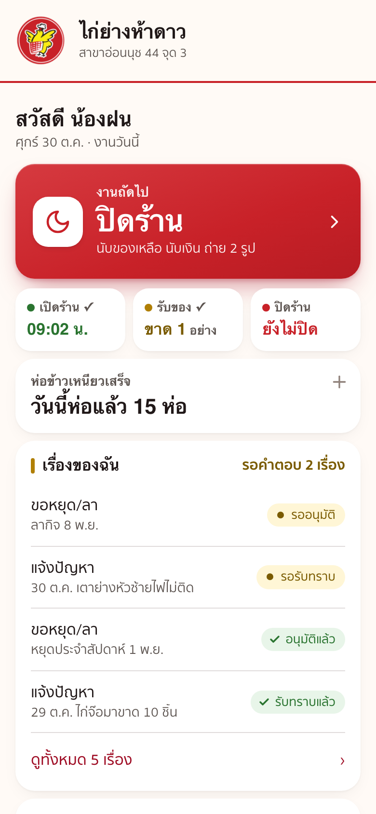
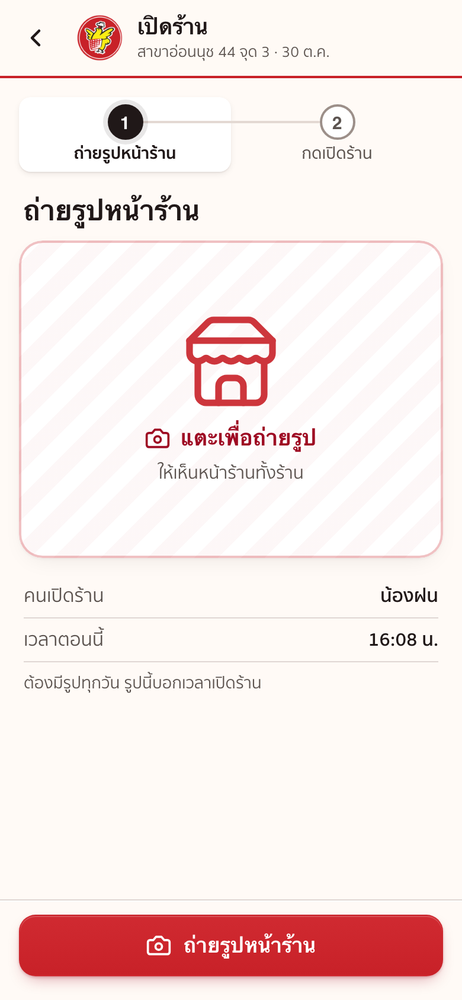
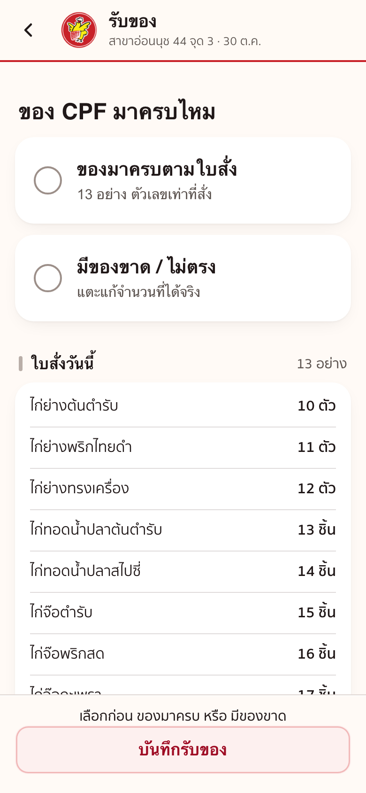
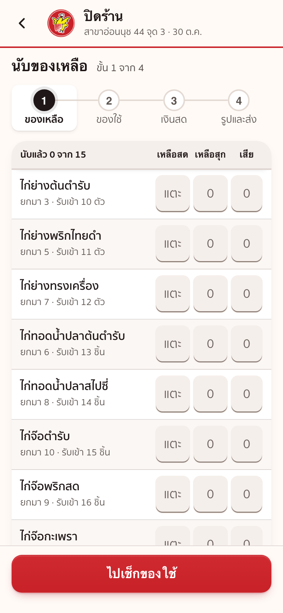
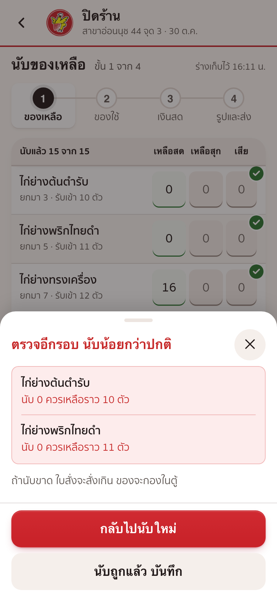
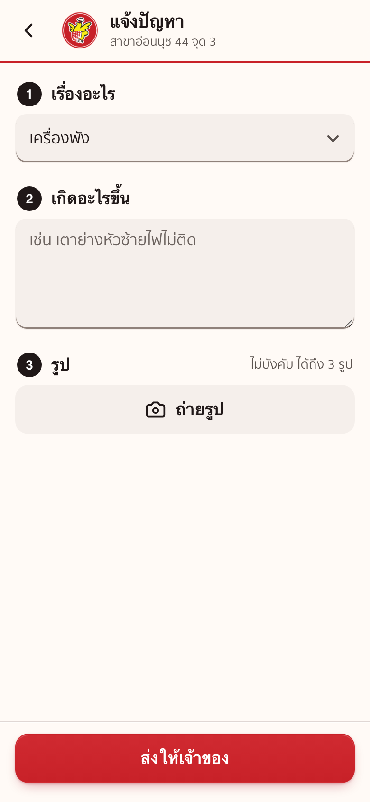
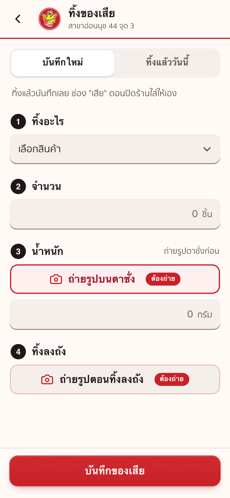
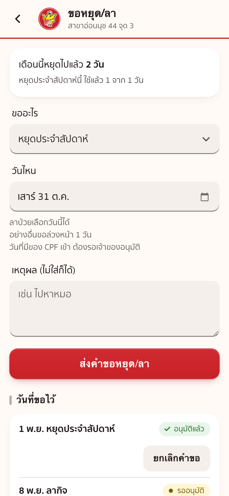

ติดตรงไหน เปิดหัวข้อนั้นดู
1หนึ่งวันของเรา
- มาถึงร้าน 09:00 น.เปิดร้าน ถ่ายรูปหน้าร้านเปิดร้าน
- ของ CPF มาส่ง ราว 14:00 น.นับของที่มา ถ่ายใบส่งของรับของ
- ระหว่างวันมีเรื่องผิดปกติ แจ้งทันทีแจ้งปัญหา
- ระหว่างวันอยากหยุดหรือลาขอหยุด/ลา
- ระหว่างวันห่อเสร็จทุกรอบ กดบอกแอปห่อข้าวเหนียว
- ระหว่างวันชั่ง ถ่ายรูป แล้วทิ้งทิ้งของเสีย
- ก่อน 20:30 น.นับของเหลือ ของใช้ เงินสด ถ่ายรูปปิดร้าน
ต้องรับของก่อน ถึงจะปิดร้านได้
วันที่ของไม่มา ก็ต้องกดรับของ แล้วเลือก "วันนี้ไม่มีของมา"
ร้านหยุดทุกวันจันทร์ หน้าแรกขึ้น "วันนี้ร้านหยุด"
วันจันทร์ไม่ต้องเปิดร้านหรือปิดร้าน และแอปไม่เตือน
นับให้ตรง ของมาพอดี

123- กล่องใหญ่บอกงานถัดไป แตะแล้วไปหน้านั้นเลย
- กล่องเล็กบอกว่าวันนี้ทำอะไรไปแล้ว
- เรื่องของฉัน: เรื่องที่เราแจ้งไว้ และเจ้าของรับทราบหรือยัง
ปุ่ม "ห่อข้าวเหนียวเสร็จ"
- ห่อเสร็จแต่ละรอบ กดปุ่ม "ห่อข้าวเหนียวเสร็จ" ที่หน้าแรก
- ใส่จำนวนห่อของรอบนั้น แล้วกด "บันทึกจำนวนห่อ"
- ปุ่มบอกยอดรวม "วันนี้ห่อแล้ว" ทั้งวันให้
ปุ่มนี้ขึ้นตอนร้านเปิดอยู่
ใส่ผิด กด "ยกเลิกรายการล่าสุด" ภายใน 10 นาที
ยกเลิกได้เฉพาะรายการของเราเอง ที่บันทึกล่าสุด
เลย 10 นาทีแล้ว แจ้งปัญหา เลือก "กรอกผิด ขอแก้"
2เปิดร้าน

1- กดปุ่มแดง "ถ่ายรูปหน้าร้าน" ต้องถ่ายตอนนั้น เลือกจากอัลบั้มไม่ได้ ไม่มีรูปเปิดร้านไม่ได้
- ได้รูปแล้ว ปุ่มแดงเปลี่ยนเป็น "เปิดร้าน" กดแล้วเห็นไก่มาสคอตกับติ๊กเขียว คือเสร็จ
เวลาที่กดเปิดร้าน คือเวลาเข้างานของเรา
รูปไม่ชัด กดลบแล้วถ่ายใหม่ได้
ถ้าหน้านี้ขึ้น "ยังไม่ได้ปิดร้านวันก่อน"
กด "ปิดร้านที่ค้างก่อน" ปิดให้เสร็จ แล้วค่อยเปิดร้านวันนี้
3รับของ

12กด "ถ่ายใบส่งของ"
กด "บันทึก ของมาครบ"
แก้จำนวนแถวที่ไม่ตรง แถวนั้นขึ้น "ขาด N" หรือ "เกิน N"
ถ่ายใบส่งของ แล้วกดบันทึก
กด "วันนี้ไม่มีของมา"
ติ๊ก "ถามเซลล์ในกลุ่มสั่งของแล้ว" แล้วกดบันทึก
เลือกสินค้า ใส่จำนวนที่ได้มา กด "เพิ่มของที่มา"
แถวนั้นขึ้น "นอกใบสั่ง" แล้วถ่ายใบส่งของ กดบันทึก
ปุ่ม "วันนี้ไม่มีของมา" กับ "+ มีของอื่นมาด้วย" อยู่ล่างสุดของหน้า เลื่อนลงไปหา
วันที่มีของมา ต้องถ่ายใบส่งของทุกครั้ง ไม่ถ่ายบันทึกไม่ได้
ถ่ายได้ถึง 3 รูป
รับของแล้ว แก้ตัวเลขได้จนกว่าจะปิดร้าน
4ปิดร้าน 4 ขั้น

123- แถบบนบอกว่าอยู่ขั้นไหน จาก 4 ขั้น
- ใส่จำนวนที่เหลือจริง แยกสดกับสุก ช่อง "เสีย" แตะไม่ได้ แอปใส่ยอดจากหน้าทิ้งของเสียให้
- กดปุ่มแดงด้านล่าง ไปขั้นถัดไป
4 ขั้น
- นับของเหลือ ทุกอย่างในตู้
วันที่ยังไม่ได้ลงของเสีย แอปถามก่อนนับ - ของใช้ในร้าน ไม่ต้องนับจำนวน แค่แตะบอก
ยังพอทุกอย่าง กด "ของใช้ครบทุกอย่าง"
มีของใกล้หมด กด "มีของใกล้หมด / หมด" แล้วแตะชื่อของ
แตะ 1 ครั้ง = ใกล้หมด
แตะ 2 ครั้ง = หมด
แตะ 3 ครั้ง = กลับเป็นมี - นับเงินสด ใส่ "ควรมี" ตามจอ POS
แล้วใส่ "นับได้" ตามเงินในลิ้นชัก - ถ่ายรูปและส่ง "รูปตู้และถาด" กับ "รูปจอ POS"
ต้องมีทั้ง 2 รูป รูปบอกเวลาที่ปิดร้าน
แล้วกด "ปิดร้าน"
ของที่นับเป็นถุง
- แถวที่ช่อง "เหลือสด" ขึ้นคำว่า "แตะ" ให้แตะช่องนั้น
- ใส่ "ถุงเต็ม" กี่ถุง และ "นอกถุง (เศษ)" กี่ชิ้น
เป๊ปซี่และน้ำดื่มนับเป็นแพ็ค ช่องจะขึ้น "แพ็คเต็ม" กับ "นอกแพ็ค (เศษ)" - แอปบวกให้เอง ดูยอดรวมแล้วกด "ตกลง"
ถาม "วันนี้มีของเสียไหม"
- เปิดหน้าปิดร้านวันที่ยังไม่มีของเสีย แอปถามก่อนนับ
- ไม่มีของเสีย กด "ไม่มี"
- มีของเสีย กด "มี ไปลงของเสีย" ลงให้เสร็จ แล้วกลับมานับ
ตอบแล้ว แอปไม่ถามซ้ำวันนั้น
ปิดร้านย้อนหลัง ของเสียวันนั้นลงในแอปไม่ได้แล้ว
ถ้ามี เขียนในช่อง "ฝากบอกเจ้าของ"
นับน้อยกว่าปกติ

123- กดปุ่มแดงไปขั้นถัดไป ถ้านับน้อยกว่าที่ควรเหลือมาก แผ่นแดง "ตรวจอีกรอบ นับน้อยกว่าปกติ" ขึ้น พร้อมรายการของ
- นับผิด กด "กลับไปนับใหม่" แถวนั้นขึ้นสีแดง
- นับถูกแล้ว กด "นับถูกแล้ว บันทึก"
นับขาด ใบสั่งจะสั่งเกิน ของจะกองในตู้
ของที่กด "นับถูกแล้ว บันทึก" ไปขึ้นในการ์ดปิดร้านที่เจ้าของเห็น
ตัวเลขชุดเดิมไม่ถามซ้ำ
ช่อง "เสีย" ตอนปิดร้านแตะไม่ได้ แอปใส่ยอดที่บันทึกไว้ให้เอง
แตะช่องนั้น มีปุ่ม "ไปบันทึกของเสีย" ตัวเลขที่นับไว้ไม่หาย
เก็บร้านแล้วมีของต้องทิ้ง บันทึกให้เสร็จก่อนกดปิดร้าน
ช่องที่ขึ้น 0 แตะแล้วพิมพ์ทับได้เลย ไม่ต้องลบ 0
ปิดแอปกลางทางได้ ตัวเลขยังอยู่ แต่รูปต้องถ่ายใหม่
กดปิดร้านแล้ว แก้ตัวเลขเองไม่ได้
ปิดร้านหลังเที่ยงคืน ยังนับเป็นวันเดิม จนถึงตี 5
มีอะไรอยากบอกเจ้าของ เขียนช่อง "ฝากบอกเจ้าของ"
5แจ้งปัญหา

1234- เลือกเรื่อง: เครื่องพัง, ลูกค้าร้องเรียน, ของ CPF มาผิด, กรอกผิด ขอแก้, เรื่องอื่น
- เขียนสั้น ๆ ว่าเกิดอะไร
- ถ่ายรูปถ้ามี ไม่เกิน 3 รูป
- กด "ส่งให้เจ้าของ"
เครื่องพัง ลูกค้าร้องเรียน ของ CPF มาผิด การ์ดเข้ากลุ่มพนักงานทันที
เรื่องอื่นเจ้าของเห็นตอนปิดร้าน
เจ้าของกด "รับทราบ" แล้ว หน้าแรกส่วน "เรื่องของฉัน" ขึ้น "รับทราบแล้ว"
6ทิ้งของเสีย

12345- เลือกสินค้า
- ใส่จำนวน
- วางบนตาชั่ง กด "ถ่ายรูปบนตาชั่ง" ให้เห็นน้ำหนัก
แล้วใส่น้ำหนักเป็นกรัม เช่น ครึ่งกิโล ใส่ 500 - ทิ้งลงถัง กด "ถ่ายรูปตอนทิ้งลงถัง"
- กด "บันทึกของเสีย"
- แผ่น "ตรวจก่อนบันทึก" ขึ้น ถูกแล้วกด "บันทึกของเสีย" ผิดกด "กลับไปแก้"
ทิ้งเมื่อไหร่ บันทึกตอนนั้นเลย
ต้องมีรูปตาชั่ง น้ำหนักอย่างน้อย 10 กรัม และรูปตอนทิ้งลงถัง
ทิ้งได้ไม่เกินจำนวนที่มีในร้านวันนี้
บันทึกแล้วแก้เองไม่ได้ ผิดให้บอกเจ้าของ
ดูของที่ทิ้งไปแล้ว ที่แท็บ "ทิ้งแล้ววันนี้"
ตอนปิดร้าน ช่อง "เสีย" แตะไม่ได้ แอปใส่ยอดจากหน้านี้ให้เอง
ปิดร้านแล้ว บันทึกของเสียของวันนั้นไม่ได้
เก็บร้านแล้วมีของต้องทิ้ง ให้บันทึกก่อนกดปิดร้าน
7ขอหยุด/ลา

123- เลือกว่าขออะไร
- เลือกวัน
- กด "ส่งคำขอหยุด/ลา"
วันที่มีของ CPF เข้า ต้องรอเจ้าของอนุมัติ
ลาป่วยเลือกวันนี้ได้ อย่างอื่นขอล่วงหน้า 1 วัน
กดยกเลิกคำขอเองได้
กดผิด มีปุ่ม "เลิกทำ" ให้กดภายใน 5 วินาที
8เดิมทำแบบนี้ ตอนนี้ทำแบบนี้
ออกจากกลุ่ม ใช้ไม่ได้
9ถ้าเจอปัญหา
ปิดร้านวันนั้นให้เสร็จ แล้วค่อยเปิดร้านวันนี้
ถ้าขึ้นว่าของวันนั้นยังไม่ได้กดรับ บอกเจ้าของก่อน
ปิดหลังเที่ยงคืนก็ได้ ยังนับเป็นวันเดิม จนถึงตี 5
แล้วแจ้งปัญหา เลือก "ของ CPF มาผิด" ถ่ายรูป
ใส่เลขติดลบก็ไม่ได้
นับใหม่อีกครั้ง ถ้าของมีจริง บอกเจ้าของให้แก้ยอดรับเข้า
ข้าวเหนียวห่อ ห่อเพิ่ม กด "ห่อข้าวเหนียวเสร็จ" ก่อน
ยังไม่ได้ ย้ายไปที่สัญญาณดีกว่า ถ้ายังไม่ได้ บอกในกลุ่มพนักงาน
10วันแรกที่เริ่มใช้แอป
ก่อนวันแรก
- เข้ากลุ่มพนักงาน
- กด "ฉันเป็นพนักงาน" ในการ์ด "ยืนยันตัวตนในร้าน"
- กด "เปิดแอป" ถ้า LINE ถามให้เพิ่มเพื่อน ให้กดเพิ่ม
- เปิดแชตร้าน เห็นเมนูด้านล่าง ปุ่มใหญ่ "หน้าหลัก" คือพร้อมใช้
วันที่ 1 ถึง 3
- ทำทุกอย่างในแอปตามปกติ
- เขียนใบนับสต็อกกระดาษควบคู่ไปด้วย
- ถ่ายรูปใบกระดาษส่งในกลุ่มพนักงานตอนปิดร้าน
- เจ้าของเทียบตัวเลขทุกคืน ไม่ตรงจะบอกในกลุ่ม
วันที่ 4 เป็นต้นไป
- ใช้แอปอย่างเดียว
- เก็บใบกระดาษเปล่าไว้ในร้าน ใช้วันเน็ตล่มหรือมือถือพัง
ยังไม่รู้ ถามในกลุ่มพนักงาน